Hi! I’m Alisa Frolova, a multidisciplinary designer based in Portugal with 10 years of experience in brand design and visual communication.
I focus on shaping how brands look, communicate and evolve. I build scalable systems for high-volume production and localisation, integrating automation and AI into workflows. I also lead and mentor designers, setting direction while remaining hands-on. I’m always curious to explore new formats and love experimenting with visuals, tools and approaches.
My posters have been recognised internationally, including an award at the Luga Poster Biennale,
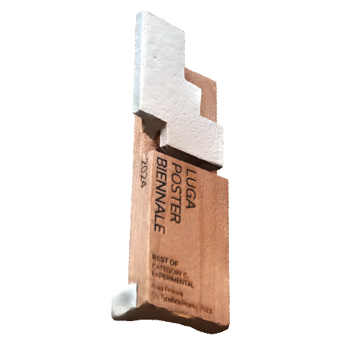
a feature at the Forward Festival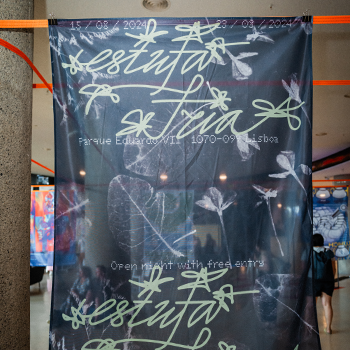
and a Silver award at the US International Poster Biennial. One of my animated posters was displayed on screens in Times Square, New York.If it's a match, contact me! email linkedin cv
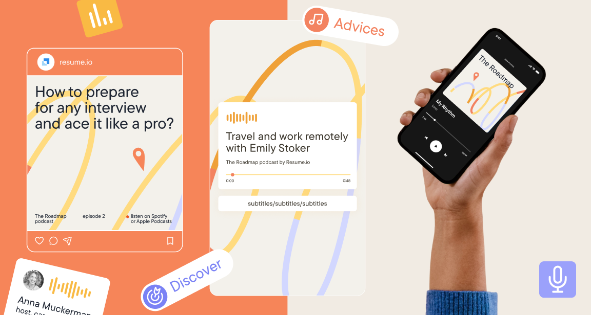
Resume.io is a tool for creating resumes and cover letters. It’s part of Career.io: a platform that brings together multiple career-focused services.
I work closely with product and marketing teams, bringing in design-driven improvements. Reimagined our video graphics from scratch, refreshed the visual identity for social media, and led creative directions for podcast visuals, AI-generated imagery instead of stock photos, and more.
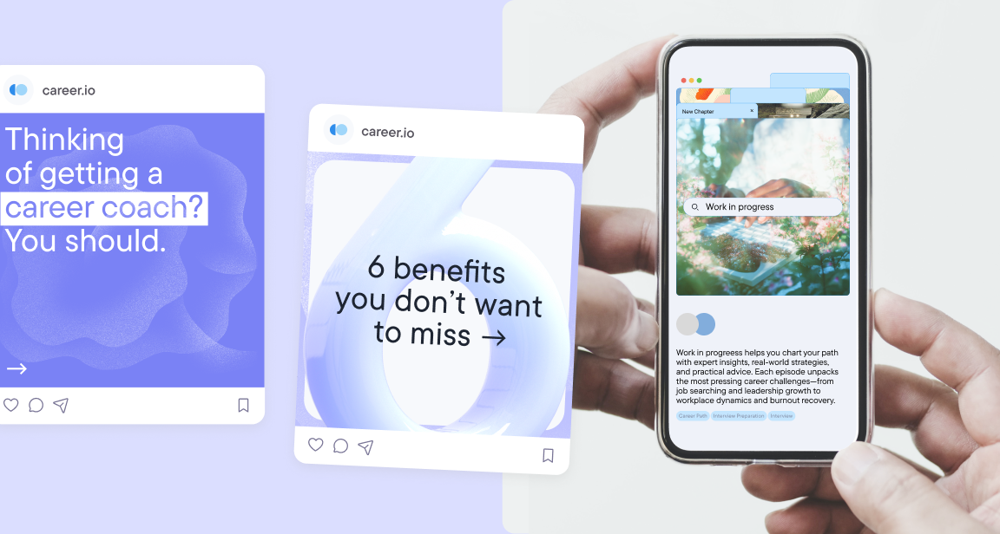
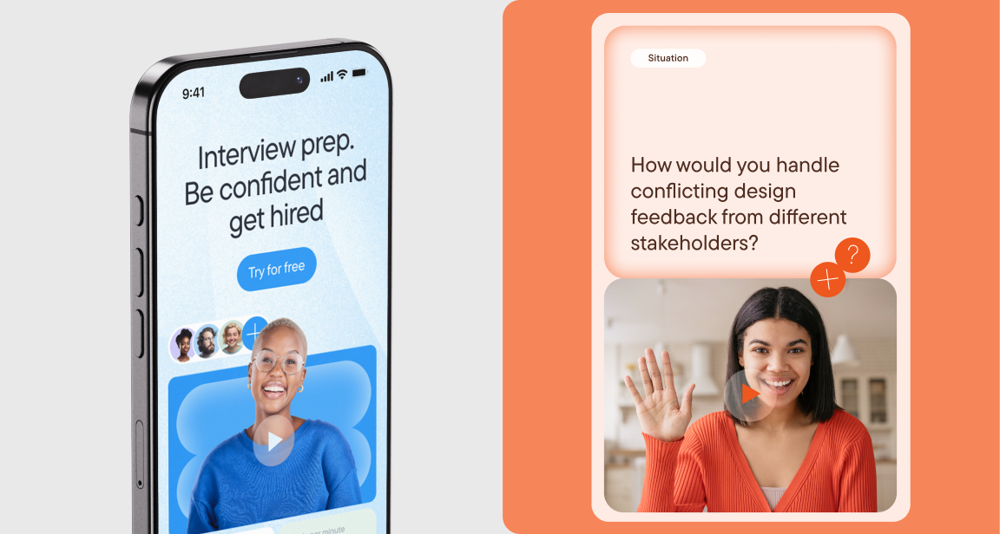
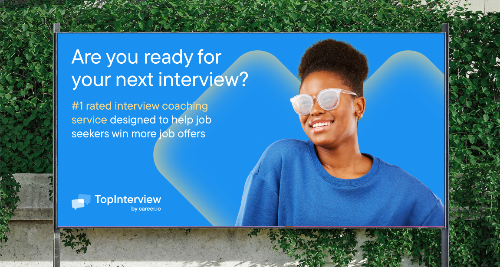
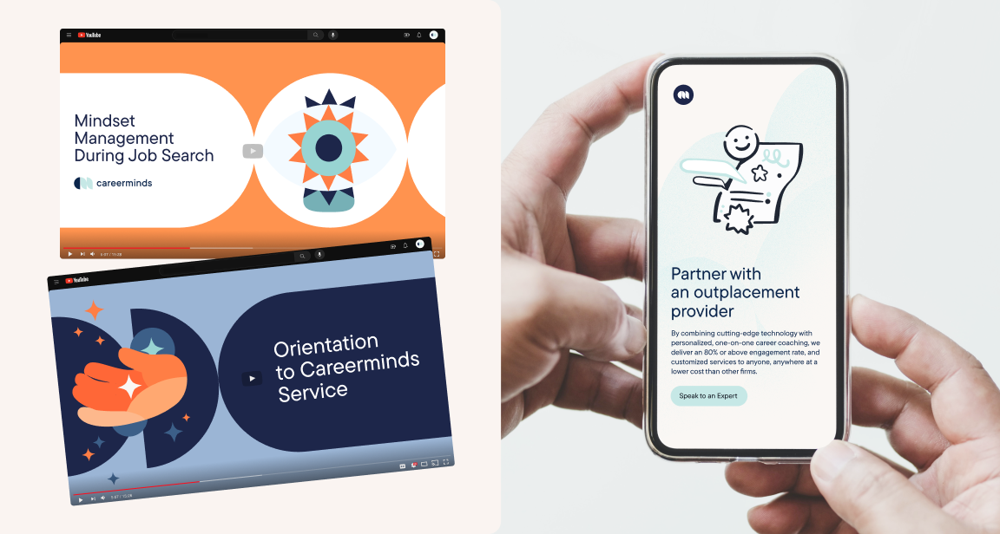
Red_mad_robot is digital partner for full cycle product development. Company help to create award-winning digital products and services for startups and well-established companies.
I am working as a part of red_mad_robot intercom team. I create sites and communications in the company and work on many recognisable styles for the events. I also love being a part of the merch team. I also work with a marketing team and help to take our style up a notch.
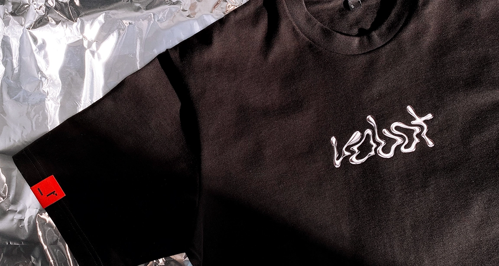
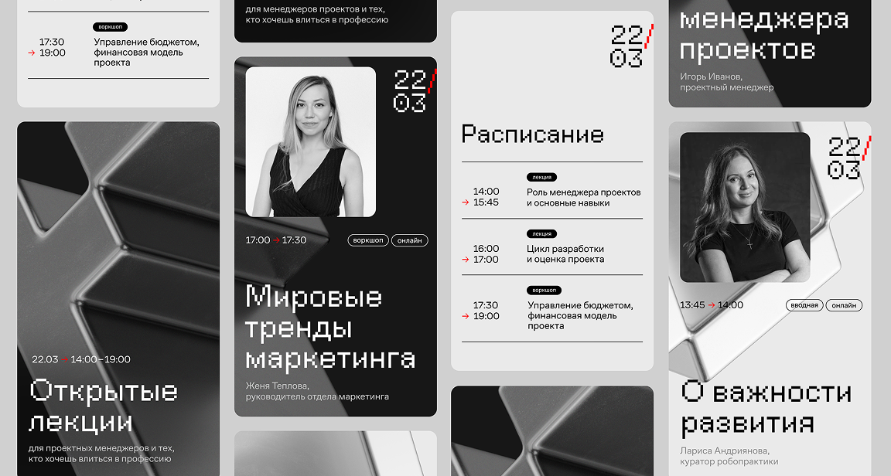
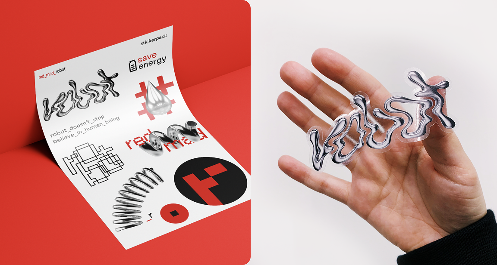
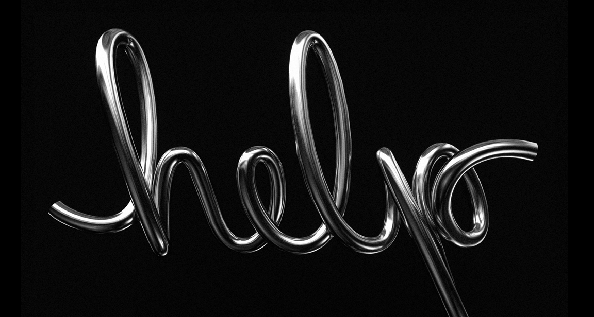
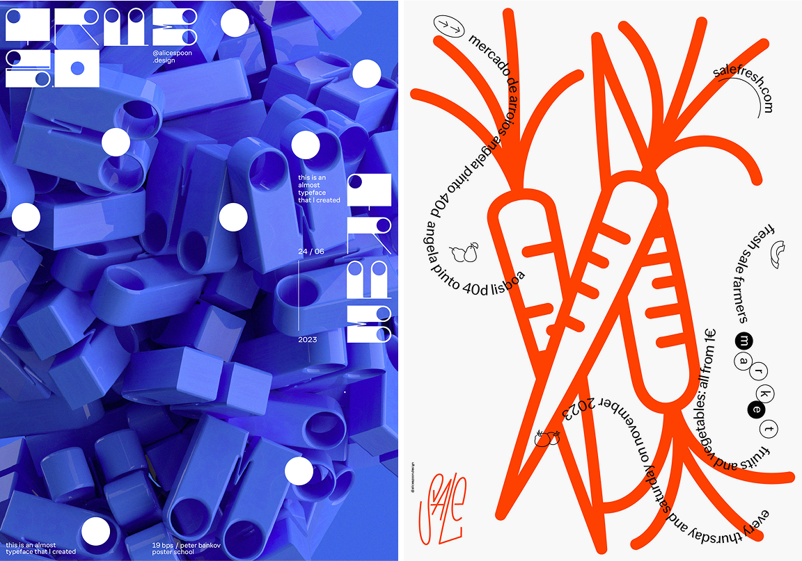
Outside of work, I am personally passionate about poster design, which is where I explore bold visual ideas and experiment with different techniques. I often combine 3D graphics, expressive typography and unconventional layouts to create striking compositions.
Many of these posters were created as part of various design courses or self-initiated projects. I see this area as a playground for creative freedom, and I regularly submit my work to international design contests and exhibitions. This allows me to sharpen my eye, break out of routine and stay connected to the artistic side of visual design.
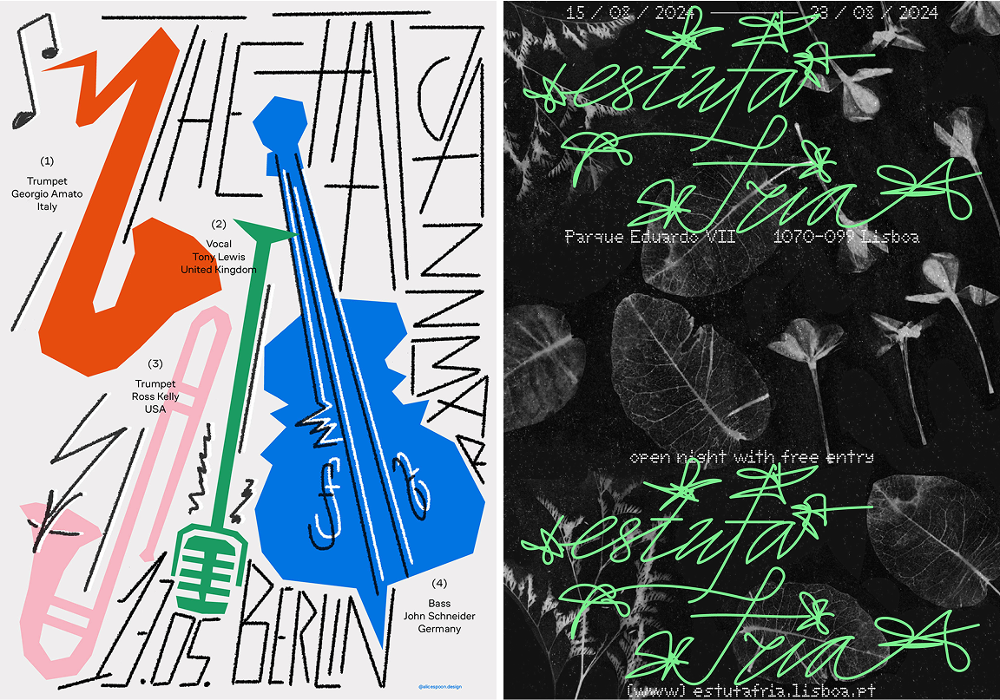
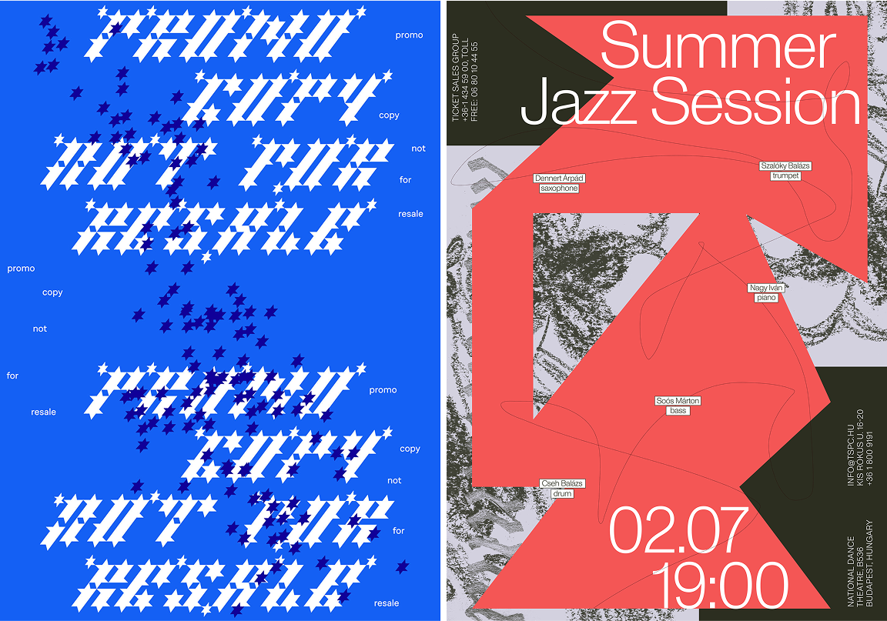